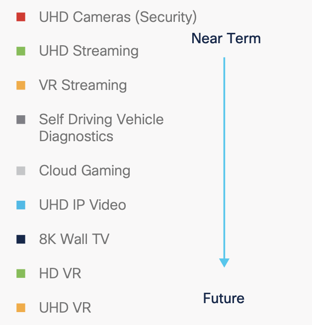

天气晴朗

CompareKit
画质主观比较

AI-Media
link to Smilegate・AI
数学之美

Calculus on Computational Graphs: Backpropagation

Neural Networks, Types, and Functional Programming
物理教育

书单
计算机科学

渲染

Understanding LSTM Networks

Attention and Augmented Recurrent Neural Networks
转载自Distill

炼丹指南
Troubleshooting Deep Learning
Docker
划时代的开源项目
算法刷题回顾
python刷题
Computing Ecosystem Literacy
The missing semester of your CS education.

视频编解码
Multi-Media Codec
TensorRT
部署推理

深度学习
advances in learning theory

非深度学习方法
for image enhancement
torch・onnx・trt
技术栈

Virtual Reality
VMAF
Netflix, Inc.
机器学习与人工智能

Awesome-Super-Resolution
reading list

Deconvolution and Checkerboard Artifacts
转载自Distill
PyTorch框架
供查阅

Distributed Training
practice
模型压缩
Model Compression and Acceleration
模型设计
卷积神经网络的复杂度分析
随笔
Research Debt
转载自Distill

ZOOM
AI & 视频协作
工具小汇
Toolbox
填坑记
配置的‘坑’与解决方案
论文推荐

Paper Reading List
Mottos
1-善良大度，追求理想。
2-We are what we repeatedly do. Excellence,then,is not an act but a habit.
3-莫要髀肉复生。
4-向谢旺多学习，他最喜欢把事情提前尽善尽美地做完。幻想拖延的话，不仅带来心理负担，形成坏习惯，最终事情也做得虎头蛇尾。